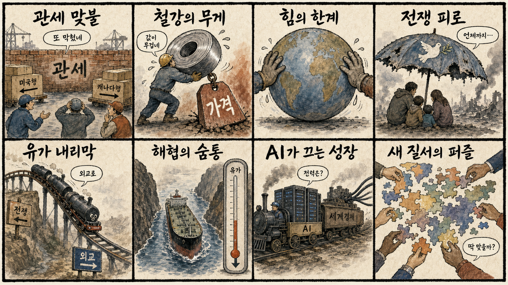
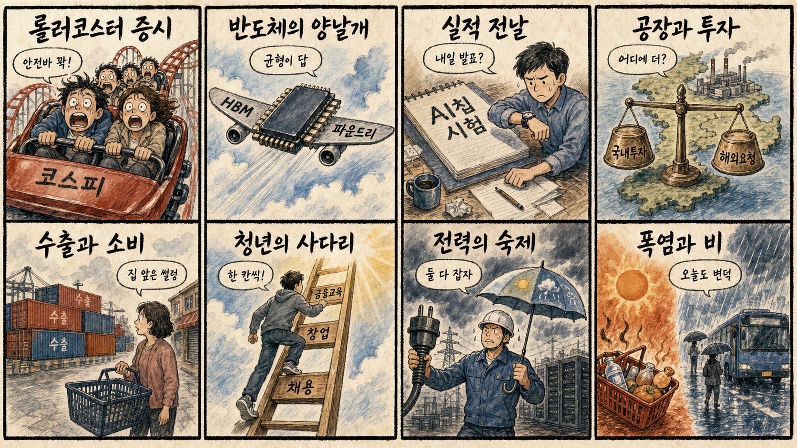

01
슈퍼마이크로컴퓨터 · 36.15→38.46달러 · +6.40%
내용요약 AI 서버 수요 기대 속 시가 대비 6.40% 상승했습니다.
예상여파 국내 AI 서버·냉각·전력 인프라 투자심리에 긍정적이지만 단기 급등 추격은 경계해야 합니다.
MORNING_BRIEFING_20260826
작성 시각: 2026-08-26 06:38 KST · 직전 미국 정규장과 2026-08-26 KST 당일 공개 기사 기준
직전 미국 정규장인 8월 25일에는 다우 +0.30%, S&P 500 +0.32%, 나스닥 +0.66%로 3대 지수가 동반 상승했습니다. 엔비디아와 AMD는 시가 대비 각각 +0.96%, +0.97%였고 슈퍼마이크로는 +6.40%로 강했습니다. 다만 크라우드스트라이크 -3.26%, 인텔 -2.69%처럼 종목별 차별화가 컸습니다. 오늘 한국 증시는 반도체 심리 회복과 유가 하락이 우호적이지만 엔비디아 실적 직전의 기대 과열과 북미 관세 충돌을 함께 경계해야 합니다.
| 지수 | 종가 | 등락률 | 한국 증시 시사점 |
|---|---|---|---|
| 다우존스 | 53,577.40 | +0.30% | 경기·위험선호 회복 |
| S&P 500 | 7,677.28 | +0.32% | 기술주 심리 개선 |
| 나스닥 종합 | 26,151.30 | +0.66% | 기술주 심리 개선 |
나스닥 +0.66%, 엔비디아 시가 대비 +0.96%였습니다.
전일 KOSPI +0.68%, KOSDAQ +1.70%였습니다.
중동 긴장은 완화됐지만 북미 보복관세가 새 변수입니다.
검증 문턱을 통과한 후보가 없어 현금 관망합니다.
8월 25일 보고서는 검증 문턱을 통과한 후보가 없어 공식 추천을 내지 않았습니다. 게시 당시 판단은 그대로 유지되며 사후 종목을 추가하지 않습니다.
| 시장 | 종가 | 등락률 | 해석 |
|---|---|---|---|
| KOSPI | 6,742.74 | +0.68% | 25일 시가 대비 +3.16% |
| KOSDAQ | 827.15 | +1.70% | 25일 시가 대비 +2.51% |
| 다우존스 | 53,577.40 | +0.30% | 경기·위험선호 회복 |
| S&P 500 | 7,677.28 | +0.32% | 기술주 반등 |
| 나스닥 종합 | 26,151.30 | +0.66% | 기술주 반등 |
슈퍼마이크로는 시가 대비 +6.40%였습니다.
마이크로소프트 +1.27%, 오라클 +1.02%였습니다.
크라우드스트라이크 -3.26%였습니다.
인텔 -2.69%, 어플라이드머티리얼즈 -2.07%였습니다.
내용요약 AI 서버 수요 기대 속 시가 대비 6.40% 상승했습니다.
예상여파 국내 AI 서버·냉각·전력 인프라 투자심리에 긍정적이지만 단기 급등 추격은 경계해야 합니다.
내용요약 대형 기술주 반등과 달리 시가 대비 3.26% 하락했습니다.
예상여파 사이버보안주는 실적 기대와 밸류에이션에 따른 종목별 차별화가 이어질 수 있습니다.
내용요약 반도체 지수 반등에도 시가 대비 2.69% 하락해 상대 약세였습니다.
예상여파 국내 반도체에는 업종 전체보다 AI칩·메모리 중심의 선별 흐름이 중요하다는 신호입니다.
내용요약 대형 소프트웨어주 선호 속 시가 대비 1.27% 상승했습니다.
예상여파 현금흐름이 확인되는 AI 플랫폼으로 자금이 이동하면 국내 소프트웨어도 실적 가시성이 중요해집니다.
내용요약 실적 발표를 앞두고 시가 대비 0.96% 상승했습니다.
예상여파 국내 HBM·반도체 심리를 지지하지만 높은 기대치 탓에 발표 전후 변동성이 커질 수 있습니다.
미국 3대 지수와 엔비디아·AMD의 반등, 유가 하락은 국내 반도체와 성장주 심리에 우호적입니다. 전일 KOSPI와 KOSDAQ도 동반 반등했지만 장중 변동 폭이 컸고 두산에너빌리티처럼 일부 연결 종목은 이미 급등했습니다. 엔비디아 실적 발표를 하루 앞둔 기대 매수와 캐나다의 대미 보복관세가 변동성을 키울 수 있어, 개장 초 갭 상승을 추격하기보다 외국인 현물 수급과 삼성전자·SK하이닉스 시초가 유지 여부를 먼저 확인합니다.
오늘은 추천 없음 — 현금 관망
미국 기술주 반등에도 엔비디아 실적 직전 이벤트 위험이 크고, 전일까지의 외국인·기관 수급, 컨센서스 변화, 30건 이상 유사 조건 확률 보정, 예상 손익비 1.5 이상을 동시에 검증한 종목이 없습니다. 종합점수와 상승확률을 임의로 만들지 않습니다.
관심 연결종목 HBM·AI 서버·전력기기는 뉴스 연결 관찰 대상일 뿐 매수 추천이 아닙니다. 전일 급등 또는 장전 갭이 큰 종목은 추격매수 금지이며 개장 후 수급 확인 전 진입을 피합니다.
기대 과열과 실적 발표 전 포지션 조정을 봅니다.
전일 반등이 실질 매수로 이어지는지 확인합니다.
철강·전자·자동차 공급망 파급을 점검합니다.
전력 피크와 출근길 국지성 비에 함께 대비합니다.
핵심 요약: 엔비디아 루빈과 AMD 패키징 수요가 AI칩 경쟁을 가속하는 가운데, 국내에서는 평택 반도체 생산기지와 피지컬 AI 기술자립 논의가 이어집니다. 데이터센터 전력난의 대안으로 SMR이 부상하지만 상용화와 인허가가 핵심 변수입니다.
내용요약 엔비디아의 차세대 AI칩 루빈 공개와 대규모 AI 자금조달 논란이 함께 부각되며 성장 지속성을 시험받고 있다는 보도입니다.
예상여파 실적과 공급 일정이 기대를 충족하면 반도체 투자심리가 개선될 수 있지만 높은 기대치와 자금조달 부담은 변동성을 키울 수 있습니다.
내용요약 에이전틱 AI 확산으로 AMD 관련 첨단 패키징 수요가 늘고 HBM 공급망이 다변화되고 있다는 보도입니다.
예상여파 패키징·기판·HBM 공급사에는 기회지만 실제 물량 배분과 수율, 고객 인증 속도에 따라 수혜 강도가 달라질 수 있습니다.
내용요약 삼성전자 평택캠퍼스가 AI 시대의 메모리·파운드리 생산 거점으로 역할을 확대하는 현장을 다룬 기사입니다.
예상여파 국내 반도체 설비투자와 지역 산업 생태계에는 긍정적이지만 전력·용수와 업황 변동 관리가 중요합니다.
내용요약 AI 데이터센터의 전력 수요를 감당할 대안으로 소형모듈원전이 주목받고 있다는 분석입니다.
예상여파 원전·전력기기·냉각 투자가 늘 수 있으나 상용화 일정, 인허가, 비용 경쟁력이 실제 도입 속도를 좌우합니다.
내용요약 정부·학계·기업이 피지컬 AI의 데이터, 인프라, 규제 장벽과 기술자립 방안을 논의했다는 보도입니다.
예상여파 로봇 AI의 산업 적용은 빨라질 수 있지만 양질의 현장 데이터와 안전기준, 부품 공급망 확보가 선행돼야 합니다.
핵심 요약: 미국과 캐나다의 보복관세가 북미 공급망을 압박하는 반면 중동 군사충돌 우려 완화는 유가와 금리를 낮췄습니다. AI 투자는 세계 성장 동력으로 평가되지만 재편되는 국제질서와 에너지 가격이 하방 위험입니다.
내용요약 유엔 사무총장이 초강대국도 국제 문제를 단독으로 해결하기 어려워졌으며 세계 질서가 재편되고 있다고 진단했습니다.
예상여파 다자협력의 필요성이 커지는 동시에 규범 공백과 지역별 세력 경쟁이 무역·안보 불확실성을 높일 수 있습니다.
내용요약 캐나다가 미국산 약 700개 품목에 총 200억달러 규모, 최대 50%의 보복관세를 예고했다는 보도입니다.
예상여파 철강·전자·소비재 가격과 북미 공급망 비용이 오르고 한국 기업도 현지 생산과 원산지 전략을 재점검할 수 있습니다.
내용요약 멕시코 외교장관이 미국과의 무역협상 뒤 한국과 자유무역협정 논의를 재개할 뜻을 밝혔다고 전했습니다.
예상여파 협상이 진전되면 자동차·부품·전자제품의 중남미 접근성이 나아질 수 있지만 미국과의 통상 관계가 속도 변수입니다.
내용요약 미국과 이란의 군사충돌 우려가 완화되며 유가와 금리가 내리고 뉴욕증시가 반등했다는 보도입니다.
예상여파 에너지 수입국의 물가 부담에는 긍정적이지만 외교 경로가 흔들리면 유가 위험 프리미엄이 다시 확대될 수 있습니다.
내용요약 IMF가 AI 투자를 세계경제 성장 동력으로 보면서도 유가 재상승을 주요 하방 위험으로 지목했다는 보도입니다.
예상여파 AI 자본지출은 성장률을 지지할 수 있으나 에너지 가격이 다시 뛰면 물가와 금리 부담이 투자 효과를 상쇄할 수 있습니다.

핵심 요약: 미국 기술주 반등과 환율 완화가 한국장에 우호적이지만 엔비디아 실적 전 변동성이 큽니다. 반도체 해외생산 요구와 국내투자의 균형, 수출과 소비의 온도차, 청년 자립 기반, 폭염·비가 오늘의 국내 핵심 이슈입니다.
내용요약 미국 증시 상승과 환율 완화를 바탕으로 26일 한국장의 반등 가능성과 변동 요인을 정리한 장전 전망입니다.
예상여파 반도체 반등은 지수에 힘을 줄 수 있지만 전일 급등 종목의 추격보다 외국인 현물 수급과 시초가 유지 여부 확인이 우선입니다.
내용요약 미국이 한국 반도체 기업에 현지 메모리 생산 확대를 요구하는 가운데 대규모 국내 투자 계획과의 균형 문제가 제기됐습니다.
예상여파 해외 생산 압력이 커지면 투자 우선순위와 보조금 조건, 국내 일자리·공급망 정책 논쟁이 더 커질 수 있습니다.
내용요약 수출 지표는 견조하지만 소비심리는 후퇴해 거시지표와 내수 체감 사이의 괴리가 커졌다는 사설입니다.
예상여파 수출 호조가 고용과 소비로 확산되지 않으면 내수 업종의 회복이 지연되고 정책 지원의 정밀도가 중요해집니다.
내용요약 청년 자립을 위해 채용과 창업 생태계, 금융교육을 함께 강화해야 한다는 현장 제언을 다룬 기사입니다.
예상여파 일자리 진입과 자산형성 기반을 함께 보완하면 청년의 장기 경제활동 참여를 높일 수 있지만 지속적인 민관 투자가 필요합니다.
내용요약 낮 최고 36도의 무더위가 이어지고 수도권·강원에는 비가 내릴 수 있다는 당일 기상 보도입니다.
예상여파 온열질환과 전력 피크를 관리하면서 짧고 강한 비에 따른 출근길 교통과 시설물 피해에도 대비해야 합니다.
